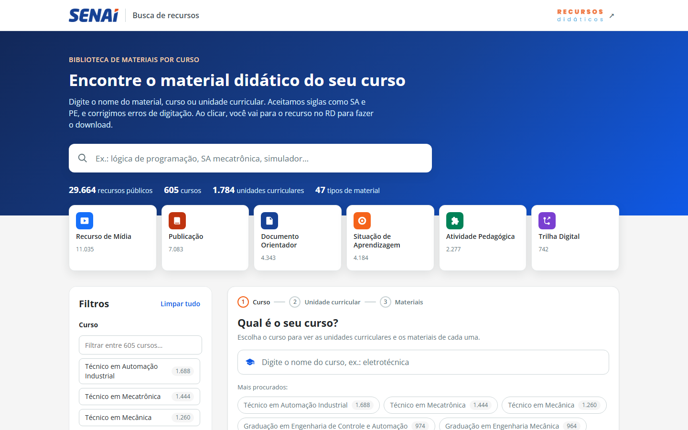
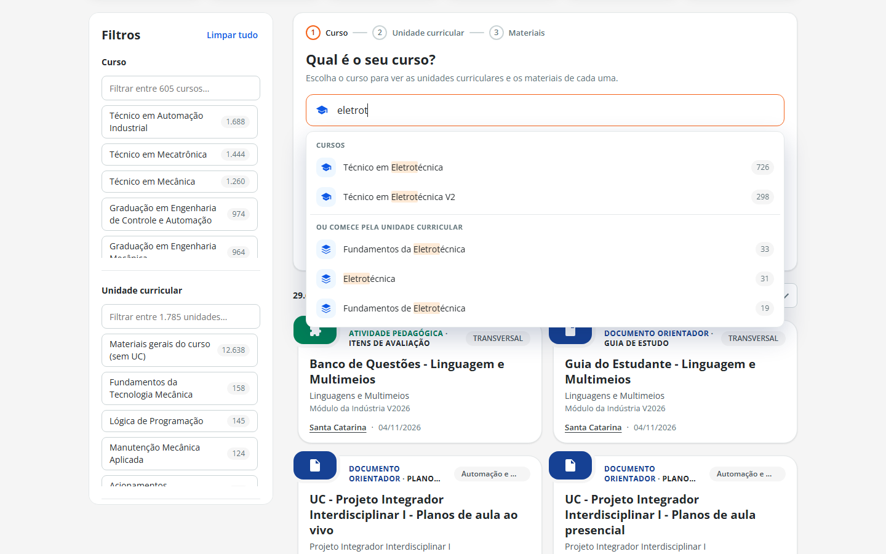
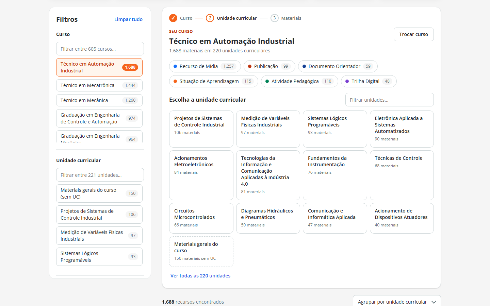
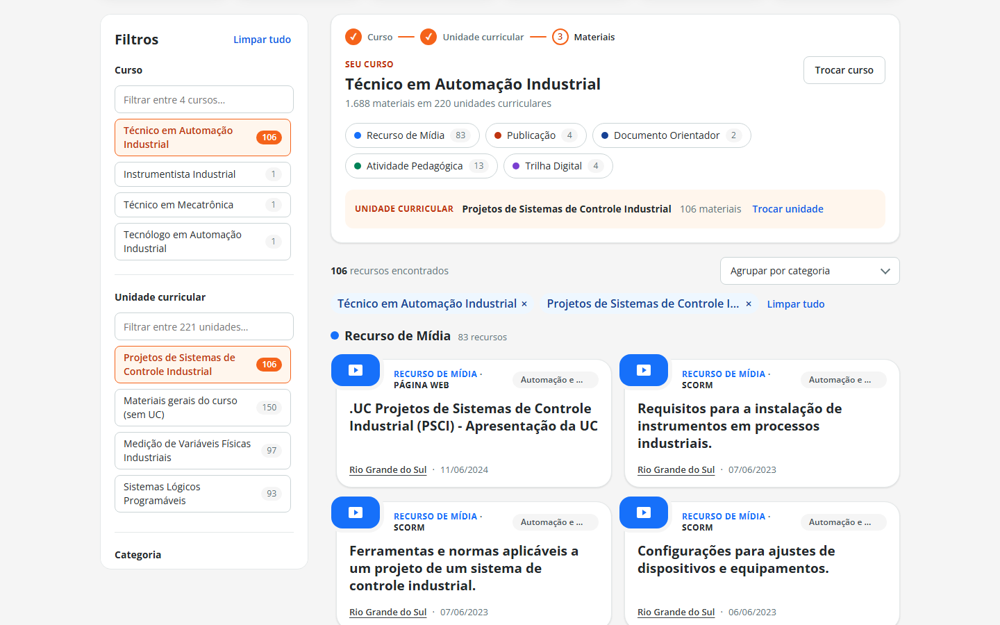
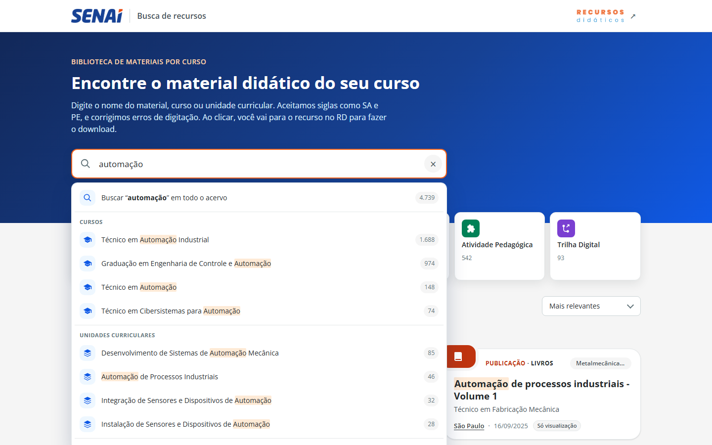
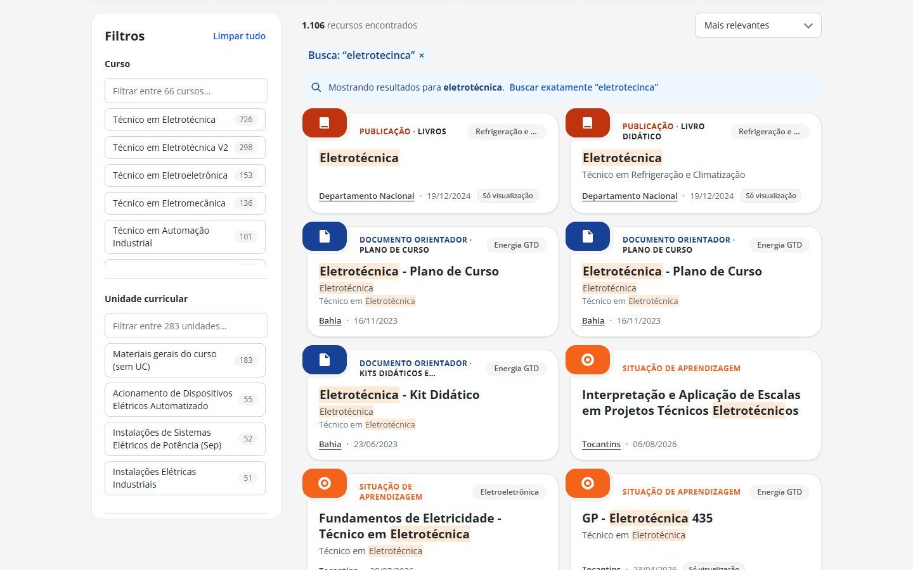
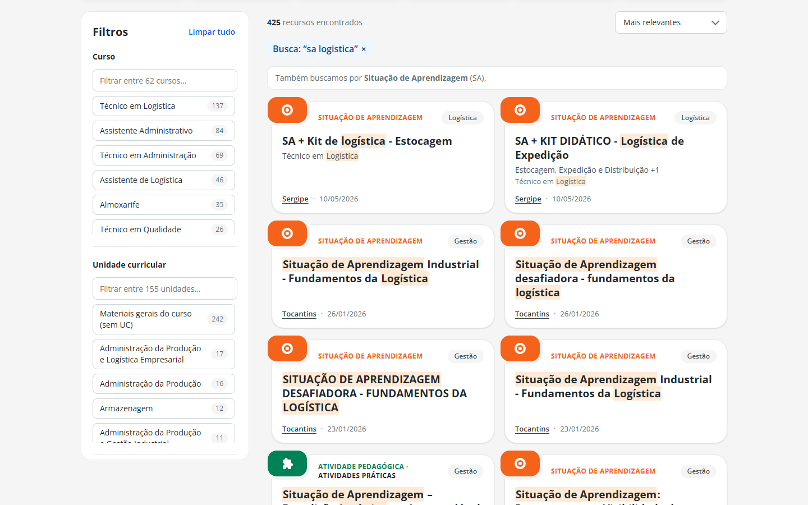
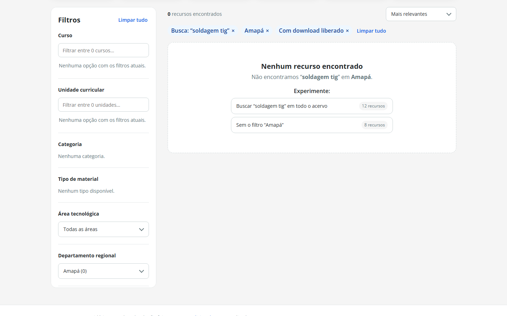
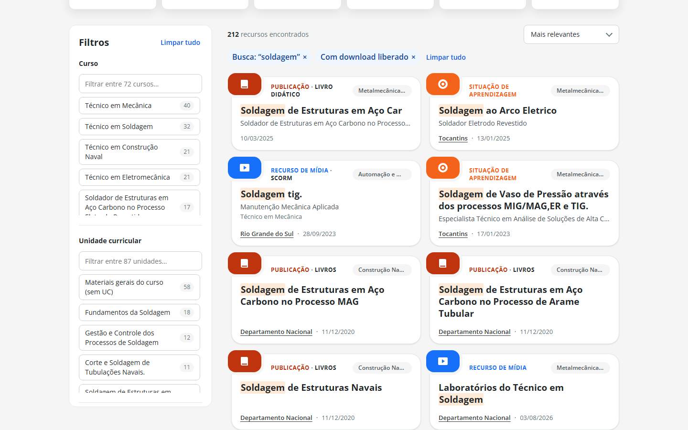
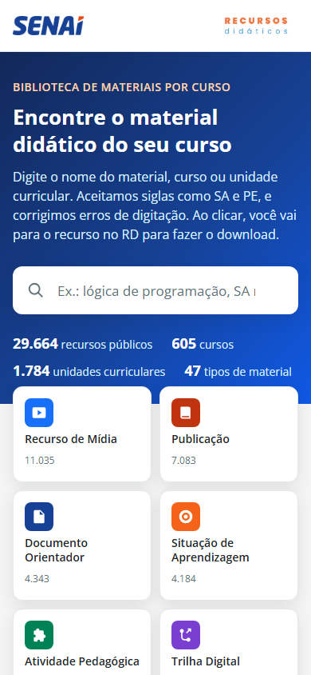

Encontrar o material certo, do jeito certo
Uma nova busca para o acervo de Recursos Didáticos do SENAI: guiada por curso e unidade curricular, simples para quem usa.
Giuseppe Parrini · Proposta de melhoria · Novembro de 2026

O RD tem um acervo enorme, e isso é ótimo
É o lugar onde os Departamentos Regionais publicam e buscam os materiais dos cursos. O desafio não é ter o material. É encontrar o material certo.
Fonte: relatório de publicação de recursos do RD, apenas recursos com visibilidade pública (exportado em 04/11/2026).
Hoje, buscar no RD não é intuitivo
Quem precisa de material (o DR que desenvolve ou o DR que vai ofertar um curso) acaba "garimpando" e corre riscos.
Difícil de encontrar
A busca não guia pelo curso e pela unidade curricular. Quando "encontra", nem sempre é o que precisava.
Material de curso antigo
É fácil baixar o arquivo de uma versão anterior do curso sem perceber.
Arquivo errado
Materiais com nomes parecidos aparecem misturados, e o download sai trocado.
Versão de outro DR
Um DR republica o material com pequenas alterações. Quem busca baixa essa cópia em vez do original de quem desenvolveu o curso.
Os próprios dados do RD mostram o problema
Com tantos materiais parecidos, escolher o certo depende de olhar com atenção quem publicou e quando.
Fonte: relatório de publicação de recursos do RD (recursos públicos, 04/11/2026). Nomes comparados sem diferenciar maiúsculas e acentos.
Tempo perdido e risco na oferta dos cursos
- 1Retrabalho: baixar, abrir, perceber que não é o arquivo certo e começar de novo.
- 2Curso ofertado com material desatualizado ou diferente do que foi desenvolvido.
- 3Material "de segunda mão": a versão de outro DR acaba circulando no lugar do original.
- 4Mais dúvidas e pedidos de ajuda para achar o que já está publicado.
Uma busca que guia até o material certo
Uma nova "vitrine" para o acervo do RD. Mesmos materiais, encontrados de um jeito muito mais simples. O download continua no RD.
Uma página, tudo à mão
- ✓Mesma base do RD: os quase 30 mil recursos públicos.
- ✓Começa pelo que a pessoa sabe: o curso e a unidade curricular.
- ✓Mostra quem publicou e quando, em todos os materiais.
- ✓Um clique abre o recurso no RD para fazer o download, como sempre.
- ✓Visual do SENAI, seguindo o Design System oficial.
Do curso ao material em 3 cliques

Escolhe o curso
Digita parte do nome ou toca em um dos mais procurados.

Escolhe a unidade curricular
Vê todas as UCs do curso, com a quantidade de materiais de cada uma.

Vê os materiais
Organizados por categoria, com DR e data de atualização.
Baixa no RD
O clique abre a página do recurso no RD tradicional.
Sugestões enquanto digita
Ao digitar só uma palavra, a busca já mostra os cursos e as unidades curriculares relacionados, com quantos materiais cada um tem.
Um clique e os resultados já ficam filtrados. Sem precisar acertar o nome exato.

Caminho guiado: curso → unidade → materiais
- 1A pessoa vê em que etapa está.
- 2Todas as unidades curriculares do curso aparecem em blocos, com a quantidade de materiais.
- 3Os materiais gerais do curso (sem UC) ficam separados.
- 4Dá para trocar de curso ou de unidade a qualquer momento.
Cada material mostra o que importa para escolher
- ◆Categoria por cor e ícone: mídia, publicação, situação de aprendizagem…
- ◆Unidade curricular e curso a que o material pertence.
- ◆DR que publicou: clicando, vê só os materiais daquele DR.
- ◆Data da última atualização, para evitar material antigo.
- ◆Aviso de "Só visualização" quando o download não é liberado.
Entende siglas e corrige erros de digitação
Digitou "eletrotecinca"? A busca entende eletrotécnica.

Digitou "SA logística"? Busca também por Situação de Aprendizagem.

Nunca deixa a pessoa sem saída
Quando não há resultado, a busca explica o motivo e sugere o próximo passo, já mostrando quantos materiais cada opção vai trazer.
Os filtros usados ficam visíveis e podem ser removidos com um clique.

Filtros simples e funciona no celular
- ▾Filtrar por curso, unidade, categoria, tipo, área e DR.
- ▾Mostrar somente o que tem download liberado.
- ▾Ordenar por mais recentes, relevância ou A–Z.
- ▾O link da busca pode ser compartilhado com os filtros já aplicados.


Cada dor tem uma resposta
Do protótipo para as mãos dos DRs
Feito
Protótipo funcionando
- Construído com a base real do RD
- Apresentado e aprovado pela supervisão
- Hoje em hospedagem pessoal, só para demonstração
Agora
Validação
- Apresentação para a coordenação
- Ajustes a partir dos comentários
- Teste com alguns DRs que usam o RD com frequência
Depois
Publicar no próprio RD
- Empacotar como SCORM e subir no RD
- Gera um link compartilhável para enviar aos DRs
- Rotina para atualizar a base de materiais
Obrigado!
Perguntas, sugestões e ideias são muito bem-vindas.
Giuseppe Parrini
Processo de criação e fases
Fase atual: MVP validado internamente
- Busca com sugestões, siglas, correção de digitação e relevância
- Caminho guiado curso → UC → materiais; filtros; link compartilhável
- Clique leva para
recursosdidaticos.senai.br/recurso-didatico/{id} - Código versionado no GitHub
Próximas fases
- Empacotar como SCORM e publicar no RD (link compartilhável)
- Rotina de atualização: reexportar o relatório e regerar a base
- Futuro: integrar direto com o RD (API) para dados em tempo real
- Opcional: hospedagem oficial após validação da TI (~15 dias)
Ferramentas, Design System e por que foram escolhidos
HTML, CSS e JavaScript puro sem servidor
Sem frameworks, sem banco de dados e sem dependências externas. Roda abrindo o arquivo, em qualquer hospedagem estática e dentro de um pacote SCORM. Menos peças, menos manutenção e nada a instalar.
Busca no próprio navegador instantânea
A base (~3 MB, 29.664 recursos) é carregada uma vez e a busca roda no navegador: resultados a cada tecla, sem custo de servidor. Inclui sinônimos, correção por distância de edição e ranking por relevância.
Design System SENAI
Cores, tipografia (Open Sans), espaçamentos e componentes da biblioteca oficial (zeroheight). Garante a identidade da marca e consistência com os outros produtos SENAI. Acessível: navegação por teclado e leitores de tela (ARIA).
Python + Git/GitHub
Python (openpyxl) converte o relatório do RD em dados prontos para a busca, com um único comando. Git e GitHub guardam o histórico de cada mudança e facilitam revisão e entrega para a TI.
Limitação atual: os dados são uma "foto" do relatório exportado (04/11/2026). Só recursos públicos entram na busca. O download e o controle de acesso continuam no RD.